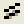

このチェックボックスにチェックを付けると、棒グラフのY=0の位置に線を表示します。
Note: このオプションは、Originのすべてのグラフに影響します。一つのグラフにだけこの設定をしたい場合、 page.BarShowZeroを使用します。
対数スケール時に1を基線とするチェックボックスにチェックを付けると、Y=1を対数スケールで表示される棒グラフの向きが変わるY値として設定します。 このオプションは、棒グラフにおいて、1未満の対数値の表示を強化します。
| シンボル枠の幅 (%) |
ここに値を入力または選択して、散布図または線+シンボルグラフのシンボルの境界幅を決定します。 このコンボボックスにn を入力すると、枠線の幅がシンボルの半径のn% に設定されます。 |
|---|
| シンボルのデフォルト塗り色 |
作図の詳細ダイアログボックスのシンボルタブにある塗りつぶしの色ドロップダウンリストから、自動が選択されているときに表示される塗りつぶしの色を選択します。 |
|---|
| 線とシンボルの間隔 |
ここに値を入力または選択して、線+シンボルグラフにおけるシンボルと線の間隔を決定します。 n を入力すると、線とシンボルの間隔をシンボルの直径のn% にします。 間隔をなくす場合は0を入力します。 最大許容値は256です。 （線とシンボルの間隔を表示するには、作図の詳細ダイアログのグラフの線タブにあるシンボルの隙間チェックボックスにチェックを付ける必要があります。） |
|---|
| シンボルギャラリーに文字を表示 |
このチェックボックスにチェックすると、作図の詳細(プロット属性)ダイアログボックスのシンボルタブのシンボルギャラリーに英数字、ギリシャ文字、特殊記号などが含められて表示されます。 |
|---|
| 破線の形式 |
破線の形式 ドロップダウンリストとテキストボックスを使って、折れ線、線＋シンボル、散布図の作図の詳細ダイアログボックスで使用できる線種の外観を設定できます。 テキストボックスで、線と間隔のデフォルトの長さ及び点のサイズを指定します。 例として、破線の形式ドロップダウンリストから2点鎖線を選択します。 この場合、18 12 5 12 5 12 のデフォルト値がその横のテキストボックスに表示されます。 この値で、最初の線が18単位の長さ、その次の間隔は12単位の長さ、次の点は5単位の長さ、その次の間隔は12単位の長さ...ということを表します。必要に応じて、これらの値を変更できます。 Origin 2022b以降: カスタマイズ可能な組み込みの破線に加えて、作図の詳細ダイアログのグラフの線タブや描画オブジェクトのプロパティダイアログの線タブなどにある線種の項目にある、カスタム破線ダイアログボックスを使って新しい破線スタイルを定義して名前付けできます。定義した破線は、定義したユーザーのシステムに追加されますが、プロジェクトにも保存されるため、プロジェクトを共有した場合もそのまま使用できます。 |
|---|---|
| ページビューで破線の形式通りに表示 |
グラフがページビューモード（表示：ページビュー、デフォルトモード）のとき、このチェックボックスにチェックを付けると、グラフ内の破線は、グラフの破線グループで定義した表示になります。しかし、このチェックを外した場合、ハードウェアのデバイスドライバで規定される一律で調整不可能な設定が使用されます。 また、チェックを付けた場合は、ページビューモードでの破線のズーム表示が可能になります。 OriginはWindowsの制約を受けず、破線のピクセルレベルでの再描画が可能になります。 ただし、このオプショを有効にした場合やや処理に時間がかかります。(逆にいえば、このチェックボックスをクリアすることは、破線の入った図の描画スピードを上げる１つの方法です。) |
| 線の太さによらず破線パターンを保つ |
『線の太さによらず破線パターンを保つ』チェックボックスにチェックをすると、Originは破線の線の部分の長さと高さを、それに続く隙間の大きさと対等になるよう調整します。これにより、線が太くなっても、破線の間隔がつぶされることが無くなります。 |
| 棒グラフの場合に0値を表示する |
このチェックボックスにチェックを付けると、棒グラフのY=0の位置に線を表示します。 Note: このオプションは、Originのすべてのグラフに影響します。一つのグラフにだけこの設定をしたい場合、 page.BarShowZeroを使用します。 |
|---|---|
| 対数スケール時に1を基線とする |
対数スケール時に1を基線とするチェックボックスにチェックを付けると、Y=1を対数スケールで表示される棒グラフの向きが変わるY値として設定します。 このオプションは、棒グラフにおいて、1未満の対数値の表示を強化します。 |
| 二分サーチポイント数 |
この値は、データリーダツールや、データプロットのダブルクリックの検索処理のスピードを速くするために使用できます。データリーダツールを使ってデータプロット上をクリックすると、Originはこのオプションの値に準じ、ポイントをシーケンシャルサーチ、あるいは二分サーチを開始します。データポイントの数がこのオプションの値より少ない時は、シーケンシャルサーチが行なわれます。データポイントの数がこのオプションの値より大きい時は、二分サーチが行なわれます。(二分サーチでは、Xデータがソートされている必要があります。) |
|---|
| ユーザ定義シンボル |
散布図や線+シンボルグラフで使用可能なカスタムシンボルを追加できます。
|
|---|
どの要素がアンチエイリアスの有効化/無効化ツールバーボタンの影響を受けるかを決定します。
| プロットチェックボックス | このチェックを付けると、2Dグラフにアンチエイリアシングが有効になります。 |
|---|---|
| 軸とグリッド線チェックボックス | 2Dグラフでデカルト式ではない軸とグリッド線にアンチエイリアシングを有効にします。 |
| 線オブジェクトチェックボックス | このチェックを付けると、線オブジェクトに2Dグラフでアンチエイリアシングが有効になります。 |
| Note1: 水平および垂直の線では2Dアンチエイリアシングがオフになります。
Note2: 3D OpenGLグラフのアンチエイリアシングをコントロールするには、環境設定：3D OpenGL設定ダイアログで操作してください。 |
| ドラッグ&ドロップ時の作図デフォルト |
ドラッグ&ドロップでの作図時のデータプロットタイプを選択します。 ｢現在の設定｣を選択した場合は、グラフレイヤの現在のスタイルホルダーの種類のグラフが作図されます。 |
|---|
グラフレイヤでスピードモード がオンになっているとき、グラフレイヤアイコンは赤くなり、スピードモードオン というウォーターマークがレイヤの中央に表示されます。 チェックを外すとウォーターマークの表示をオフにします。
ウォーターマークは画面の中央に表示されるだけで、グラフを印刷したり、コピーしたり、エクスポートするときには含まれません。
ページレベルのミニツールバーボタンをクリックすることでも、スピードモードのウォーターマーク（スピードモードバナー）の表示を切り替えできます。 |
| 平均化によるパーセンタイル |
この平均化によるパーセンタイルチェックボックスにチェックを付けると、統計分析において百分位数 (パーセンタイル) を決定するための補間を実行します。 チェックを外すと、パーセンタイルの計算は四捨五入されます。 パーセンタイル値は、50パーセンタイル未満の計算ではデータセットの次のメンバーに切り上げられ、50パーセンタイル以上の計算では切り捨てられます。 50パーセンタイル値は切り捨てられます。 このチェックボックスのステータスはボックスチャートのような統計グラフのパーセンタイルを示す線にの描画に影響を与えます。 |
|---|
| OLEの個所をアクティブにする |
このチェックボックスにチェックを付けるとOLEのインプレイス(個所)のアクティブ化します。 この設定を有効にすると、埋め込みのOriginオブジェクトをの相手先アプリケーションで編集操作が可能になります。 相手先のウィンドウでOriginのツールにアクセスできます。 Note: データプロットを含むワークシートにアクセスできないため、OLEの個所をアクティブにするのは非推奨です。 |
|---|
_Graph_Tab/Image145.png)